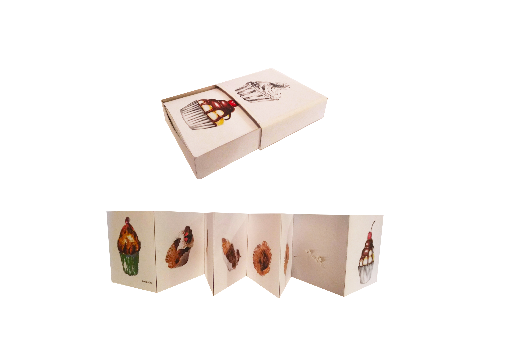

Livro de Artista
2ºano AVT/ Desenho
Este projeto permitiu-me meter em prática o espírito do curso de Artes visuais e tecnologias (junção e desenvolvimento de diferentes habilidades) e trabalhar diversas áreas ao mesmo tempo tais como: o desenho, a fotografia e o cake design. A partir de registo fotográfico captei o percurso de “vida” de um cupcake, desde o seu preparo até ser ingerido e equiparei o mesmo com a de um ser humano. Pois a nossa vida é um ciclo, não estamos sempre bem, nem ficará para sempre tudo mal.